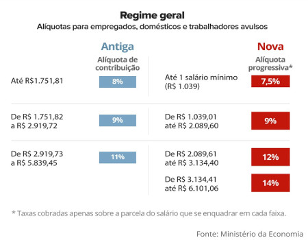

Alíquotas de Contribuição ao INSS
O reajuste se reflete na cobrança da contribuição dos trabalhadores para o INSS. Para empregados com carteira assinada, domésticos e trabalhadores avulsos, as alíquotas são:
- até R$ 1.830,29 - 8%
- de R$ 1.830,30 até R$ 3.050,52 - 9%
- de R$ 3.050,53 até R$ 6.101,06 - 11%
Essas alíquotas são relativas aos salários pagos em janeiro e que deverão ser recolhidos até 29 de fevereiro. Para os pagamentos a partir de 1º de março, a tabela mudará em razão das novas regras introduzidas pela reforma da previdência, as alíquotas passam a ser:
- até 1 salário mínimo R$ 1.039,00 - 7,5%
- de R$ 1.039,01 até R$ 2.089,60 - 9%
- de R$ 2.089,61 até R$ 3.134,40 - 12%
- de R$ 3.134,41 até R$ 6.101,06 - 14%
Novas Alíquotas de Contribuição

Cálculo de Desconto do INSS
Atualização Janeiro/2020: novo salário mínimo 2020
Para realizar o cálculo do desconto do INSS preencha os dados abaixo e clique em "calcular".
Resultado
| Fração | Alíquota | Valor | Desconto INSS Total |
|---|